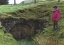
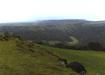
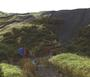

The Pwll Du Tram Tunnel is a unique historic feature of the South Wales landscape and British industrial heritage. Indeed the Blaenavon area which includes the town & ironworks, Big Pit Museum, Pwll Du tram tunnel and Hill's tramroad were designated a World Heritage Site by UNESCO in November 2000. At the time of the great expansion in South Wales iron production, resulting from Abraham Darby’s innovation of the use of coke rather than charcoal for ironsmelting, Blaenavon Ironworks (1789) was the first purpose-built multi-furnace ironworks to be completed in Wales. The new use of a steam engine to blow the furnaces set this site ahead of its competitors, both in design and capacity.
|
 Pwll Du tunnel mouth to Tyla, now re-opened with a gate installed. |
Coal and iron for supplying the works was obtained from a series of mineral levels in the north-eastern flank of the Lwyd Valley, north of Blaenavon. In the days before the creation of the nationally famous Big Pit, the Pwll Du Tunnel was one such mine, driven (probably by Thomas Deakin) between 1780-1812 for some ¾ mile at a shallow incline deep into the coal and ore-rich hillside. At the Blaenavon entrance the tunnel is brick lined and currently supported by large 20th century timbers.
|
 Cwm Llanwenarth looking from Garnddyrys towards Pwll Du (Gloucestershire Schools Centre - centre left:tunnel to right; Ogof Draenen below to right) |
As ideas developed for constructing an iron forge at Garnddyrys, on the western arm of the Blorenge in Cwm Llanwenarth, the old steep gradient tramroad from Blaenavon was to be superseded by a new roadway driven completely through the hill via the Pwll Du Tunnel. A section of cut-and-cover stone-lined passage in the form of a Y-branch comprises the two linked portals at the Pwll Du end. Garnddyrys iron forge later came to be immortalised in Alexander Cordell’s international best-seller Rape of the Fair Country (1959). This work is now republished by local writer and publisher Chris Barber who is participating in the project.
Opened during 1818-21, Thomas Hill’s limestone tramroad tunnel from Pwll Du to Blaenavon - and pig iron roadway connecting link from the Blaenavon furnaces to the Llanfoist Wharf on the Brecknock and Abergavenny Canal (via Garnddyrys Forge) - was the longest of its kind in Britain at just over 2km (1¼ miles) long. There is a height rise of some 21 metres (70 feet) from Blaenavon to Pwll Du and along the course of the Garw Seam extensive mining has been undertaken to the sides of the main roadway. Subsidiary workings date from 1814, 1864, 1867-8, 1894, 1898 and 1902.
Paul Deakin and Clive Gardener have examined detailed plans at the Coal Authority Archive in Bretby including the Pwll Du Tunnel abandonment plans from 1961. These show a continuous open passage exisiting through the hill on a measurement survey dating from 1933, when the tunnel was under consideration as a possible colliery. A heading was driven by 15-20 men working for the Blaenavon Company during 1933-34 when high quality steam coal was found in a workable seam 0.6 - 0.9 metre (2-3 feet) thick. Faults, the presence of water and possible proximity of older disused workings finally brought the mining operations to a close.
Whereas the transportation of iron to Garnddyrys was made more efficient by a rebuilt incline over the top of the hill in 1850, the closure of the Garnddyrys works and relocation of the iron working at Forgeside, Blaenavon in 1860 also saw the closure of one northern branch of the tram tunnel at Pwll Du. However, as recently as the General Strike of 1926 limestone was carried from the Pwll Du and Tyla quarries to Blaenavon on trams, latterly hauled by stationary engines at both ends of the tunnel.
THE TUNNEL OPERATION
A site inspection at Pwll Du in 1978 by Blaenavon historical researcher Martin Lawler and one time resident of Long Row Stan Jones, resulted in the collation of a number of fascinating local memories:-
At the height of its active life the tunnel saw loads of some 15-20 trams, each containing about 2 tons of limestone rock. Battery-operated bell wires were used in the tunnel to give stop, easing-off and go signals - respectively one, two or three taps. In winter time during the 1920s, John Powell, who operated the main stationary engine at the Blaenavon entrance, would take care to delay the trams should he see any Pwll Du women approaching in the distance. They used the tunnel as a short-cut in times of bad weather and rode through the hill seated on the trams. John Powell was an amputee, who had lost both legs when the haulage ropes came off the sheaves. Meanwhile, William Watkins worked the ‘tail’ engine at Pwll Du.
Subsequent to the General Strike the quarries closed and
the tunnel fell into disuse. Local memories are that the Pwll Du
end was closed by a brick wall. A major collapse nearer to the surface,
some 45m (50 yds) into the Tyla branch appears to be related to
water seepage from the local Pwll Du reservoir. Bedding collapse
some 40m into the Garnddyrys branch, prior to the Y-junction may
also be connected with the reservoir, but possibly occurred during the
surface open cast workings of the 1940s. The area came to be the first
major open cast site in the country and the only site which remains today
as a classic example of unrestored workings.
|
 Coal tips at the Blaenavon tunnel mouth entrance by the feet of the person with a red jacket. |
Plans to follow:
Pwll Du village showing ‘tunnel mouth’ to Tyla and ‘old coal level’ mouth to Garnddyrys. Long Row was demolished with most of the village after the residents were re-housed in Govilon during 1963.
Course of the tunnel through the hill.
Tunnel mouth at the Blaenavon end c.1880 showing the tramway in situ and route connecting with Blaenavon Ironworks.
All Photographs © Clive Gardener 2001